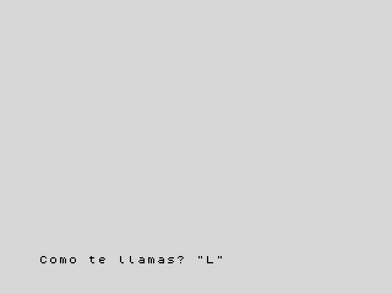

3. Texto y preguntas
En este capítulo aprenderás a guardar texto en variables de cadena,
a juntar y cortar textos, y a preguntar a quien está al teclado con INPUT.
Cadenas
A un trozo de texto se le llama cadena. Ya has usado cadenas: todo lo que
va entre comillas dobles, como "Hola". Las cadenas también se pueden
guardar en variables, cuyo nombre es una sola letra seguida de $ (se lee
"a dólar"): a$, n$, t$.
10 LET a$="ZX"
20 LET b$="Spectrum"
30 LET c$=a$+" "+b$
40 PRINT c$
50 PRINT LEN c$
60 PRINT c$(1 TO 2)
70 PRINT c$(4 TO )
80 PRINT c$(4)
Esto escribe:
ZX Spectrum
11
ZX
Spectrum
S
+junta cadenas: la línea 30 forma"ZX Spectrum".LENda la longitud, el número de caracteres (los espacios cuentan).c$(1 TO 2)saca un trozo: del carácter 1 al 2.c$(4 TO )va del 4 al final, yc$(4)es solo el carácter 4.
Solo hay 26 variables de cadena, una por letra, así que elige letras que te
recuerden lo que guardan: n$ para un nombre, p$ para una palabra.
Números y textos
Un número y una cadena son cosas distintas: "42" son dos caracteres y 42
es un número. Estas funciones pasan de uno a otro:
| Función | Qué hace | Ejemplo | Resultado |
|---|---|---|---|
STR$ |
de número a cadena | STR$ 42 |
"42" |
VAL |
de cadena a número | VAL "2*3+1" |
7 |
CODE |
el código del primer carácter | CODE "A" |
65 |
CHR$ |
el carácter con ese código | CHR$ 66 |
"B" |
10 LET n=42
20 LET t$=STR$ n
30 PRINT "El numero tiene ";LEN t$;" cifras"
40 PRINT VAL "2*3+1"
50 PRINT CODE "A",CHR$ 66
Cada carácter tiene un código: la A es el 65, la B el 66, y así
sucesivamente. Volverás a usar CODE para leer el teclado en el capítulo 11.
Hacer preguntas: INPUT
INPUT para el programa y espera a que la persona teclee algo y pulse Enter.
Lo que teclee va a una variable:
10 INPUT "Como te llamas? ";n$
20 INPUT "Que edad tienes? ";e
30 PRINT "Hola, ";n$
40 PRINT "Dentro de una decada tendras ";e+10
La pregunta sale abajo de la pantalla, seguida de un cursor que parpadea:

Si la variable es una cadena (n$), el cursor sale entre comillas, para
recordarte que la respuesta es texto: escríbela sin comillas, que ya están
puestas. Vale cualquier texto. Si es un número
(e), teclea un número: la máquina calcula lo que escribes como si fuera una
cuenta, así que 30+6 también da 36. Las palabras son un problema: si
tecleas diez, por ejemplo, el programa se para con
2 Variable no encontrada, porque la máquina cree que diez es el nombre de
una variable.
Pruébalo
- Pide un nombre y un apellido y escribe las iniciales: con "Grace" y
"Hopper", el programa escribe
Tus iniciales: GH. - Pide una palabra y escribe cuántas letras tiene.
Pista
El carácter 1 de f$ es f$(1). Para el segundo ejercicio, LEN hace la
cuenta.
Una solución para el primero
10 INPUT "Nombre? ";f$
20 INPUT "Apellido? ";s$
30 PRINT "Tus iniciales: ";f$(1);s$(1)
Referencia: Cadenas,
LEN, STR$, VAL,
CHR$, CODE,
INPUT.
Siguiente: 4. Decisiones · Anterior: 2. Variables y cuentas